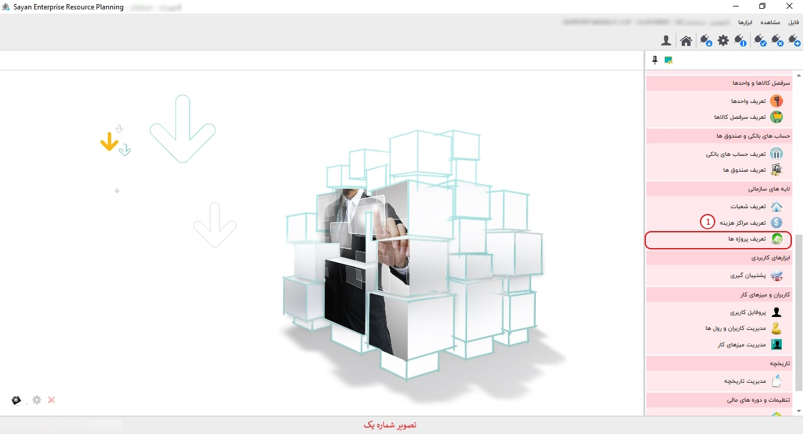
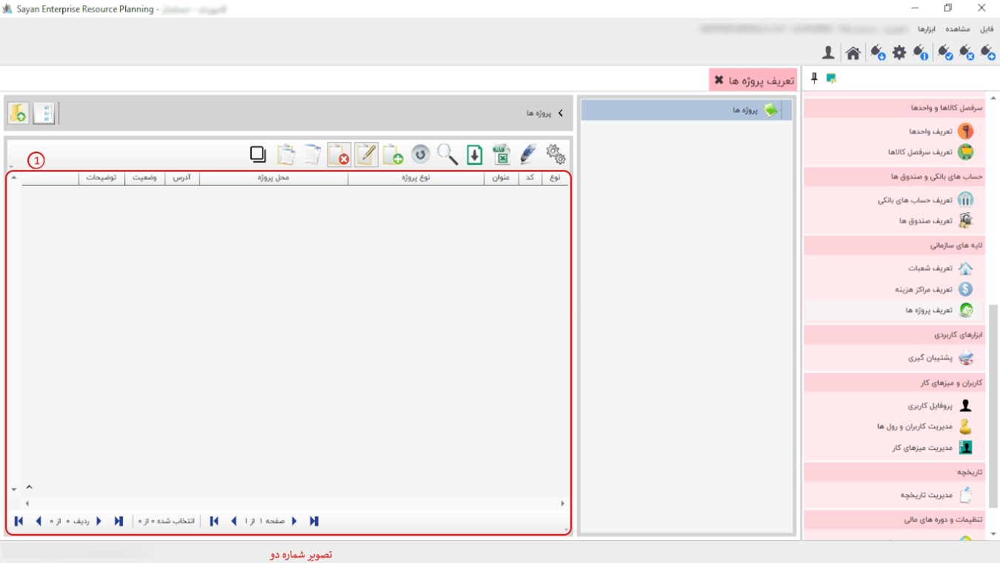

در این قسمت شما می توانید پروژه هایی که در حال اجرا دارید را تعریف کنید و حساب های خود را به تفکیک پروژه نگهداری نمایید. پیشنهاد می شود پروژه ها را گروه بندی کنید و در داخل هر گروه پروژه ی مربوط به آن را تعریف کنید برای تعریف گروه یا پروژه از نوار ابزار گزینه ی اضافه یا F8 را بزنید تصویر زیر نمایان می شود:
برای ادامه مطلب به عکس شماره دوم مراجعه نمایید.
-کادر شماره یک: